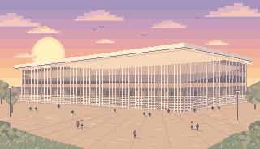

PORTFOLIO · BTS SIO SLAM
Du code
& des pixels.
Bienvenue dans mon carnet de dev. J’y partage mes projets de BTS, entre passion du jeu vidéo et amour des Girondins de Bordeaux.

RÉALISATIONS
Mes projets.
MON PARCOURS
À propos.
En BTS SIO, option SLAM, j’apprends à construire des applications. Ce carnet rassemble les interfaces, les API et les expériences de traitement de données que je développe au fil de ma formation.
Découvrir mon parcours →En dehors du code
Les Girondins de Bordeaux
Le marine et blanc, jusque dans mon carnet.
Les jeux vidéo
Un goût pour les mondes à explorer et les décors en pixels.